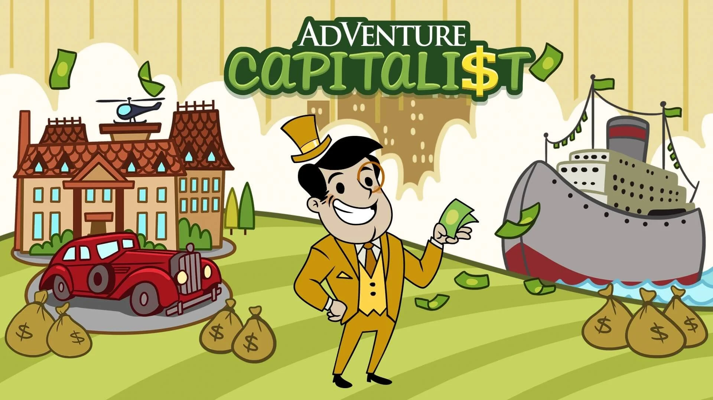
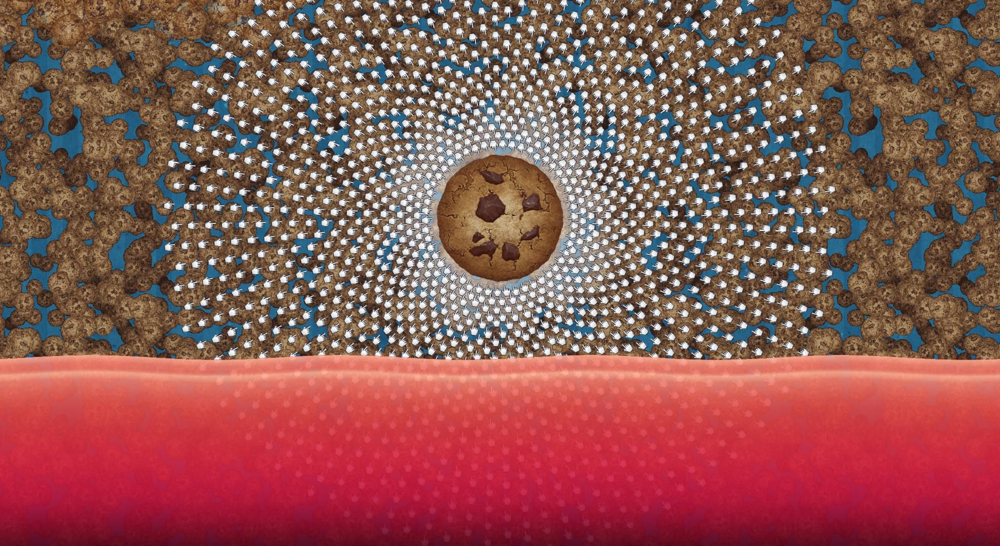
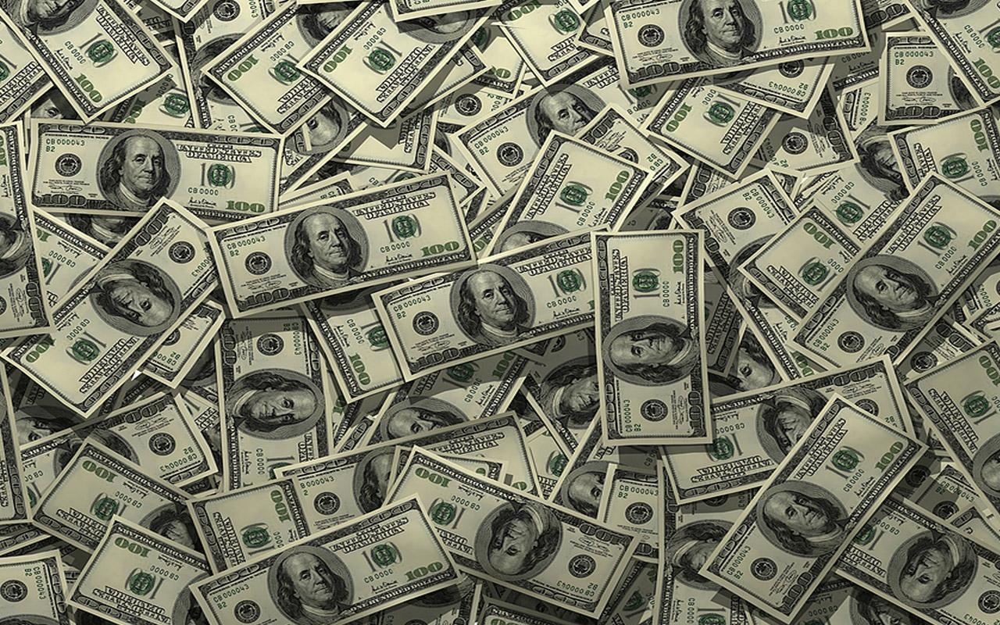

-
|
- Sobre o
Projeto
|
- Jogos
Clicker / Idle
|
- Teste
de Click
|
- Pesquisa |
- Meu Jogo
Clicker
|
- Rank |
Este projeto foi criado como um projeto individual para um
trabalho escolar, e tem
como finalidade o meu aprendizado e o meu desenvolvimento em programação, focando no
HTML, no JavaScript, no CSS, e no Banco de Dados.
Escolhi como tema desse projeto "Jogos CLicker / Idle", que é
um tema que me acompanha
a muitos anos e que me fez, e me faz, me divertir, ou pelo menos me distrair,
em vários momentos da minha vida.
Não leve este projeto muito a sério. O projeto foi criado à base do
meu divertimento em desenvolvê-lo
e para explicar um pouco da minha paixão pelos Jogos Clicker, tudo feito com muito
carinho, e visando uma boa nota acadêmica.

Sobre o Tema do Projeto:
Um "Jogo Clicker / Idle" é uma categoria de jogo onde o
jogador tem
como principal objetivo ganhar recursos (algum tipo de moeda / dinheiro) para, assim,
conseguir investir esses tais
recursos em melhorias para se tornar ainda mais rico.
O jogador tem duas maneiras de conquistar essas moedas,
clicar ou esperar, daí vem o nome da categoria. "Clicker"
se refere ao ato de clicar, e o "Idle" se refere ao ato de esperar (em inglês, a palavra
significa, literalmente, "estar parado"
ou "estar inativo").
Cada jogo clicker tem o seu objetivo, o seu
tema, e o seu jeito de abordar novas mecânicas para o jogador.
A duração de conclusão desses jogos varia muito, porém, a grande maioria dura anos para o
seu 100%.
Os jogos clicker são jogos um pouco "fora do nicho",
por isso você pode achá-los estranhos ou até intediantes à primeira vista,
porém, eu tenho certeza que você, mesmo achando tudo isso, se der uma chance ao jogo, irá
adorar e se viciar em clicar e
ficar ainda mais rico (no jogo).

Eu e os Jogos Clicker:
Resolvi escolher esse tema para o meu projeto por dois motivos. O
primeiro é que eu já
estava criando um jogo clicker em HTML e JavaScript, por pura diversão e aprendizado,
assim, eu já tinha algo começado
para o meu projeto. O segundo motivo, e mais importante, é que eu gosto muito desse tipo de
jogo.
Os jogos clicker estão na minha vida à mais de 10 anos, e desde que
eu comecei à jogá-los,
lembro de sempre estar me divertindo, me distraindo, e relaxando,
enquanto me deleito vendo os números subindo.
Fico muito feliz de ter me engajado nesse tipo de jogo. Esses jogos,
em sua maioria,
são tão extensos que acabaram me acompanhando na vida. Sempre tenho algo a mais para fazer neles:
comprar novos aprimoramentos,
desbloquear conquistas, aumentar números, etc. Sinto que, independente do momento, tenho
sempre algum objetivo a cumprir e algo
para aprimorar nos jogos clicker.

Recomendações:
Espero que eu tenha, pelo menos, levantado um leve interesse sobre o
tema em você. Segue
abaixo algumas das minhas recomendações de jogos clicker / idle para você experimentar
(Steam).
Esse é um teste de velocidade de clicks. Você terá 10 segundos para clicar o máximo possível no botão abaixo.
0:00 Clicks: 0
Desenvolvi um jogo clicker (uma Demo) por diversão e também
para tentar aprender o máximo possível de JavaScript e de lógica de programação. Foquei em otimizar o
máximo possível de linhas de código
e em aprender novos comandos.

O jogo está incompleto (desbalanceado) e é o meu
primeiro jogo clicker, então por favor pegue leve. Divirta-se e espero que goste!